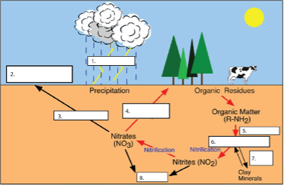

| Fill in Each Number with Best Choice from Word Bank | Word Bank |
| 1. | N2 |
| 2. | Abiotic N Fixation |
| 3. | Cation Exchange |
| 4. | NH4+ |
| 5. | Mineralization |
| 6. | Plant Uptake |
| 7. | Denitrification |
| 8. | Leaching |
6 Biological Processes (1)
Objectives
- Understand the dynamics of the nitrogen cycle.
- Observe nodules involved in symbiotic N2 fixation.
- Understand the effect of biological activity and soil organic matter on aggregate stability.
- Observe soil fauna.
- Inoculate plates.
Key Words & Concepts
- Leaching
- Nitrification
- Mineralization
- Denitrification
- Volatilization
- Aggregates
- Microbial Gums
- Symbiotic Fixation
- Nodules
- Rhizobium
6.1 INVESTIGATION A: Forms of Nitrogen
You will probably come across many complex and confusing representations of the nitrogen cycle in other venues. Use your knowledge of the simplified representation of the nitrogen cycle that we discussed in class to fill in the blanks in the appropriate places on the diagram below (which I note is also incomplete).

6.2 INVESTIGATION B1: Observing Nodules
Observe the roots of the live alfalfa and soybean plants (both uninoculated (no nodules) and inoculated (nodules)) which have been provided for you to look at. Don’t be afraid to pull a plant out and look at the roots! Put it in the container of soil when finished. Rhizobia is the common name given to a group of small, rod- shaped, Gram negative bacteria, which collectively have the ability to induce nodule production on the roots of leguminous plants. Observe the nodules on the plants in the jars.
Draw a diagram of a nodule and a root:
6.3 INVESTIGATION B2: Dissecting Nodules
Pluck a nodule off of either a soybean or alfalfa root and cut it open with a razor blade under the dissecting scopes. When you cut open an active nitrogen-fixing nodule, a significant portion of the nodule should be pink or red in color. This color is due to the presence of a hemoglobin similar to that found in blood (known as “leghemoglobin” in legumes), and regulates oxygen supply, in this case, to the bacteria. The amount of hemoglobin present is usually closely correlated to amount of nitrogen fixed, with white or green-colored nodules usually very limited in their ability to fix nitrogen. Remember though that nodules have a finite life span (in the case of soybean estimated at 50-60 days) so that toward the end of the growing season many of the initial nodules will have already begun to senesce, and are brown or green in color, while the more active nitrogen-fixing nodules may now be located on lateral roots. Cut open a nodule from the samples provided, view under the microscope, and complete the following table.
| Nodule Color | Explanation |
6.4 INVESTIGATION C: Aggregate Stability
The ability of a soil aggregate to withstand disruption by water depends in large part on the amount of microbial exudates and gums present in the soil organic matter. An aggregate stability test consists of moving soil slowly up and down on a screen suspended in water. Observe differences in water stability of the aggregates in the A and E horizon of a soil by:
- Obtain similar sized aggregates from samples of A and E horizons.
- Place each aggregate on a screen.
- Immerse the screen below the water level of the container.
- Observe differences between the aggregates in terms of their ability to withstand disruption by water. You should see that one of the aggregates “slakes” or falls apart significantly faster than the other.
| Horizon | Observation |
| A | |
| E |
6.5 INVESTIGATION D: Soil Organism Observation
We have placed some soil from the field in a funnel which has a screen at the bottom. At the top is a heat lamp. Mobile organisms in the soil (like microarthropods) move downwards away from the heat and fall into the petri dish full of water. Observe the organisms extracted in the petri dish from this soil under the microscope and complete the following table. See if you can find any “soil critters” in the soil.
| Type of Organism | Number/Size Observed and Description |
NOTE: See the list of organisms. Lots are possible!
6.6 SETUP FOR NEXT WEEK’S LAB: Culturing Microorganisms from Soil Materials
Soils are literally teeming with microbiota and it is very easy to culture them on many different types of media. Because soil microorganisms are highly diverse, we can only ever culture a small portion of the total in the lab. However, this exercise will show you that (unsterilized) soil materials are literally bursting at the seams with life.
IMPORTANT! WHEN AND IF POSSIBLE, DO THIS SET-UP IN GROUPS OF 2-3. WATCH VIDEO TUTORIAL ON IPADS! Ask a TA if you need help.
- Take a plate of PDA (Potato Dextrose Agar). Without opening it, flip it over and with a permanent marker, draw 2 perpendicular lines to divide the plate into 4 quadrants, label the quadrants as shown in the example plate, and put your names and today’s date on the bottom of the plate.
- Put on a pair of gloves (this is not a sterile environment!).
- Using the sterilized toothpicks provided (use a different toothpick or set of toothpicks for each soil material provided!), inoculate each labelled quadrant of the plate. Inoculate by swishing a sterile toothpick through them and gently wiping the proper quadrant with the toothpick, leaving small bits of soil should be sufficient.
- There are 4 materials to inoculate with:
- Autoclaved –Sterilized sand,
- Topsoil from the campus experimental fields,
- Dried soil which is high in organic matter but has been sitting, air-dried, for over 10 years, and
- A saturated wetland soil.
- Seal your plate with parafilm and place in the tray provided.